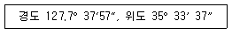
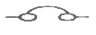
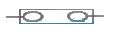
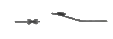
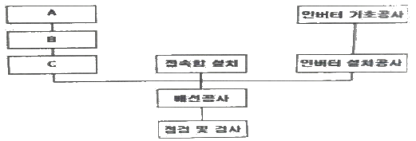
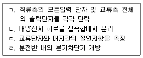

신재생에너지발전설비기사(구) (2018-04-28 기출문제)
1과목: 임의 구분
1. 위도 36.5°에서 하지 시 남중 고도는?
- 30°
- 45°
- 70°
- 77°
(정답률: 72%)

2. 태양전지 모듈의 온도에 대한 일반적인 특성이 아닌 것은?
- 태양전지의 모듈은 정(+)의 온도 특성이 있다.
- 태양전지 온도가 상승할 경우 개방전압과 최대출력은 저하 된다.
- 계절에 따른 온도변화로 출력이 변동 된다.
- 태양전지 모듈의 표면온도는 외기온도에 비례해서 맑은 날씨는 20∼40℃ 정도 높다.
(정답률: 77%)
3. 0.5V 의 전압을 갖는 태양광 전지 24개를 (6개의 직렬×4개의 병렬)연결하여 부하에 접속하였다. 부하에 인가된 전압(V)은?
- 3
- 12
- 15
- 18
(정답률: 67%)
4. P형의 실리콘 반도체를 만들기 위해 실리콘에 도핑하는 원소로 적당하지 않은 것은?
- 인듐(In)
- 갈륨(Ga)
- 비소(As)
- 알루미늄(Al)
(정답률: 57%)
5. 전원전압 100V, 소비전력 100W인 백열전구에 흐르는 전류는 몇 A 인가?
- 1A
- 0.6A
- 6A
- 60A
(정답률: 83%)
6. 2500W인버터의 입력전압 범위가 22∼32V이고 최대출력에서 효율은 88%이다, 최대 정격에서 인버터의 최대 입력 전류는?
- 약 78A
- 약 88A
- 약 113A
- 약 129A
(정답률: 60%)
7. 태양열 발전 시스템에 대한 설명 중 틀린 것은?
- 홈통형 : 공정열이나 화학 반응을 위해 열을 제공한다.
- 파라볼라 접시형 : 집열기에서 태양열에너지를 직접열로 변환시켜 열로 이용 한다.
- 진공관형 : 집열판내의 가열된 열매체는 파이프를 통해 열교환기로 수송되어 증기를 생산 한다.
- 파워 타워형 : 집광비는 300∼1500sun 정도이며 1500℃ 이상 에서도 동작이 가능
(정답률: 64%)
8. 태양전지 모듈의 바이패스 다이오드에 대한 설명 중 틀린 것은? (문제 오류로 실제 시험에서는 1, 4번이 정답처리 되었습니다. 여기서는 1번을 누르면 정답 처리 됩니다.)
- 태양전지 모듈의 원활한 동작을 위하여 바이패스 다이오드는 발전하는 동안 계속 동작해야 한다.
- 일반적으로 바이패스 다이오드는 태양전지 모듈의 단자함내부에 위치한다.
- 바이패스 다이오드는 태양전지 모듈의 동작을 원활히 하기 위한 부품이다.
- 일반적으로 박막 태양전지 모듈의 경우 바이패스 다이오드를 사용하지 않는다.
(정답률: 81%)
9. 태양전지 모듈에 대한 다른 태양전지 회로와 축전지의 전류가 유입되는 것을 방지하기 위해 설치하는 것은?
- 피뢰소자
- 바이패스 소자
- 역류방지 소자
- 정류다이오드
(정답률: 84%)
10. 다수의 태양광모듈이 스트링을 접속하게 하여 보수점검이 용이하도록 한 것은?
- 분전반
- 개폐기
- 접속함
- SDP(서지보호장치)
(정답률: 82%)
11. 독립형 태양광 발전 시스템은 매일 충.방전을 반복해야 한다. 이 경우 축전지의 수명(충·방전cycle)에 직접적으로 영향을 미치는 것이 아닌 것은?
- 보수율
- 방전심도
- 방전횟수
- 사용온도
(정답률: 57%)
12. 태양광 발전시스템이 계통과 연계 시 계통측에 정전이 발생한 경우 계통측으로 전력이 공급되는 것을 방지하는 인버터 기능은?
- 자동운전 정지기능
- 단독운전 방지기능
- 자동전류 조정기능
- 최대전력 추종제어 기능
(정답률: 74%)
13. 다음중 비정질 실리콘 모듈의 충진율(Fill Factor)로 가장 적합한 것은?
- 0.35∼0.55
- 0.56 ∼ 0.61
- 0.75 ∼0.85
- 0.86 ∼0.95
(정답률: 47%)
14. 독립형 태양광 발전설비의 종류가 아닌 것은?
- 복합형
- 계통 연계 형
- 축전지가 없는 형
- 축전지가 있는 형
(정답률: 75%)
15. 결정질 태양전지의 에너지 손실이 가장 적은 부분은?
- 직렬저항
- 재결합 손실
- 전면접촉으로 초래된 반사와 차광
- 단파장 복사에서 너무 높은 광자 에너지
(정답률: 64%)
16. 태양광 발전시스템에서 안전을 확보하기 위해 과전압계전기, 부족전압 계전기, 주파수 상승계전기, 주파수 저하 계전기 등에 필요로 하는 설치기능은?
- 자동전력 조정기능
- 최대전력 추종기능
- 계통연계 보호기능
- 직류지락 검출기능
(정답률: 75%)
17. 다음 중 연료전지의 종류가 아닌 것은?
- 인산형(PAFC)
- 용융탄산염형(MCFC)
- 분산전해질형(PEFC)
- 고체산화물형(SOFC)
(정답률: 62%)
18. 정전용량 5㎌의 콘텐서에 1000V 의 전압을 가할 때 축적되는 전하는?
- 5×10-3C
- 6×10-3C
- 7×10-3C
- 8×10-3C
(정답률: 82%)
19. 실리콘 태양전지와 비교해서 화합물 반도체 GsAs(갈륨비소)태양전지의 특징은?
- 모든 파장 영역에서 빛의 흡수율이 떨어진다.
- 접합 영역에서 전자와 정공의 재결합이 낮다.
- 빛의 흡수가 뛰어나 후면에서 재결합이 거의 발생하지 않는다.
- 접합 영역이나 표면에서의 재결합보다 내부에서의 재결합이 많이 발생한다.
(정답률: 67%)
20. 태양광 발전시스템에 사용되는 인버터회로에 대한 설명 중 틀린 것은?
- 직류전압을 교류전압으로 변환하는 장치를 인버터라 한다.
- 전류형 인버터와 전압형 인버터로 구분 할 수 있다.
- 전류방식에 따라 타력식과 자력식으로 구분할 수 있다.
- 인버터의 부하장치에는 직류전권권동기를 사용 할 수 있다.
(정답률: 70%)
2과목: 임의 구분
21. 태양광발전설비 모니터링 시스템의구축시 메인화면에 표시할 내용으로 거리가 먼 것은?
- 대기온도
- 누적발전량
- 축열부의 유랑
- 인버터의 상태(ON/OFF)
(정답률: 66%)
22. 경사도 계수 0.6, 노출계수 0.9,기본 지붕적설하중이 0.6N/m2 이고 적설면적이 100m2일 때 적설하중은 얼마인가?
- 25.4N
- 40.8N
- 90.5N
- 32.4N
(정답률: 60%)
23. 태양광 발전설비의 음영발생 원인이 아닌 것은?
- 대기 중의 습도
- 나뭇잎 또는 새의 배설물
- 건물이나 식재 등의 장애물
- PV 어레이 상호배치에 의해 생성
(정답률: 79%)
24. 태양광 발전시스템 부지 선정 시 일반적 고려사항으로 거리가 먼 것은?
- 부지의 가격은 저렴한 곳인지 확인
- 높은 장애물(산, 건물 등)의 주변지형을 확인
- 일사량이 좋은 지역이고 동향인지 확인
- 토사, 암반의 지내력 등 지반지질 상태확인
(정답률: 73%)
25. 설계도서의 의미를 가장 적합하게 설명한 것은?
- 구조물 등을 그린 도면으로 건축물, 시설물, 기타 각종사물의 예정된 계획물
- 설계, 공사에 대한 시공 중의 지시 등 도면으로 표현될 수 없는 문장이나 수치 등을 표현한 것으로 공사수행에 관련된 제반규정 및 요구사항을 표시한 것이다.
- 공사계약에 있어 발주자로부터 제시된 도면 및 그 시공 기준을 정한 시방서류로서 설계 도면,표준시방서,특기시방서,현장설명서, 및 현장설명에 대한 질문
- 각종기계, 장치등의 요구조건을 만족시키고 또한 합리적, 경제적인 제품을 만들기 위해 그 계획을 종합하여 설계하고 구체적인 내용을 명시하는 일을 일컫는다.
(정답률: 61%)
26. 표준 시험조건 (STC) 기준으로 틀린 것은?
- 모든 시험의 기준온도는 25℃로 한다.
- 모든 시험의 풍속조건은 10m/s로 한다.
- 빛의 일조강도는 1000w/m2를 기준으로 한다.
- 수광조건은 대기질량(AM : Air Mass)1.5의 지역을 기준으로 한다.
(정답률: 77%)
27. 인버터(PCS) 주요기능에 대한 설명으로 옳지 않은 것은?
- 계통설계 기능
- 계통연계 보호기능
- 자동전압 조정기능
- 최대전력점 추종제어(MPPT)기능
(정답률: 74%)
28. 태양광어레이 전선굵기를 산정하기 위한 기준이 아닌 것은?
- 전압강하
- 역률
- 전류
- 전력손실
(정답률: 66%)
29. 대기질량(Air Mass, AM)에 대한 설명이 틀린 것은?
- AM 0은 대기권 밖일 때
- AM 2.0은 태양빛이 30°로 비추는 상태일 때
- AM 1.0은 바다표면에 태양빛이 90°로 비추는 상태일 때
- AM 1.5는 태양빛이 180°로 비추는 스텍트럼일 때
(정답률: 74%)
30. 분산형 전원의 전기품질 관리항목에 해당하지 않는 것은?
- 역률
- 고조파
- 노이즈
- 직류 유입 제한
(정답률: 47%)
31. 250W의 PV 모듈을 사용하고 모듈의 온도에 따라 전압변동 범위가 30∼50 V일 때 모듈을 직렬연결 할 때 최대설치 가능 개수는? (단, 인버터(PCS)의 동작전압이 400∼720V, 설치간격, 기타 손실 및 조건은 무시한다)
- 13
- 14
- 15
- 16
(정답률: 58%)
32. 태양광발전소 부지선정 절차로 옳은 것은?
- 지역설정- 지자체 방문 공부확인-토지이용협의 및 소유자파악-현장조사
- 지역설정- 현장조사- 지자체 방문 공부확인-토지이용 협의 및 소유자 파악
- 지역설정- 주변지역지가조사- 지자체방문 공부확인-현장조사
- 지역설정- 지자체 방문 공부확인-현장조사-주변지역 지가조사
(정답률: 65%)
33. 우리나라 다음지역의 태양전지 어레이의 연중 최적경사각으로 적합한 것은?

- 10∼15°
- 15∼20°
- 30∼35°
- 45∼70°
(정답률: 63%)
34. 경제서 분석중 편익분석 방법의 종류가 아닌 것은?
- 순현재 가치 분석법
- 비용편익비 분석법
- 편중미분 분석법
- 내부수익률법
(정답률: 61%)
35. 태양광 발전 시스템의 22.9KV 특별고압 가공선로 1회선에 연계가능한 용량으로 옳은 것은?(오류 신고가 접수된 문제입니다. 반드시 정답과 해설을 확인하시기 바랍니다.)
- 30 KW이하
- 100 KW이하
- 10000 KW이하
- 30000 KW이하
(정답률: 56%)
36. 한국전력공사의 22.9KV 배전선로와 연계하는 발전사업자용 태양광설비를 계획 시 연계하려는 선로 및 계통에서 한국전력설비 및 배전선로에 대해 검토해야할 사항이 아닌 것은?
- 변전소의 배전용 변압기의 전체용량
- 한 변전소에 연계되어 있는 전체발전설비 용량
- 한 변압기에 연계되는 발전설비 용량
- 연계하고자 하는 배전선로에 연계되어 있는 전체발전설비 용량
(정답률: 51%)
37. 공사시방서 작성요령으로 옳지 않은 것은?
- 공사의 질적 요구조건을 기술 한다.
- 사용할 자재의 성능, 규격, 시험 및 검증에 관하여 기술한다.
- 도면에 표시되는 내용을 참조하여 치수를 정확히 기재한다.
- 시공 시 유의할 사항을 착공 전, 시공 중, 시공완료후로 구분하여 작성 한다.
(정답률: 44%)
38. 다음의 전기기호 중에서 KS에서 표기하는 진공차단기 (VCB)는 어느 것인가?



(정답률: 69%)
39. 태양전지 어레이(길이 2.58m, 경사각 30°)가 남북방향으로 설치되어 있으며 앞면어레이의 높이는 약 1.5m 뒷면어레이에 태양입사각이 20°일 때 어레이의 그림자길이(m)는?
- 약 2.5m
- 약 3.1m
- 약 4.1m
- 약 5.5m
(정답률: 41%)
40. 태양전지 어레이의 경사각에 대한 설명 중 틀린 것은?
- 경사각을 낮출수록 대지이용률이 감소함
- 건축물의 경사진 지붕을 이용할 경우 지붕의 경사각으로 함
- 적설을 고려하여 선정
- 태양광어레이의 지면과 이루는 각
(정답률: 64%)
3과목: 임의 구분
41. 송전선로의 안정도 증진방법이 아닌 것은?
- 계통을 연계 한다.
- 전압변동을 적게 한다.
- 직렬 리액턴스를 크게 한다.
- 중간조상방식을 채택한다.
(정답률: 67%)
42. 태양광 발전설비공사의 사용 전 검사를 받으려면 검사를 받고자하는 날의 며칠 전에 어느 기관에 신청하여야 하는가?
- 7일전 한국전기안전공사
- 10일전 한국전기안전공사
- 7일전 한국에너지 관리공단(신재생에너지센터)
- 10일전 한국에너지 관리공단(신재생에너지센터)
(정답률: 69%)
43. 태양광 발전시스템에 일반적으로 적용되는 CV케이블의 장점으로 틀린 것은?
- 내열성이 우수하다.
- 내수성이 우수하다.
- 내후성이 우수하다.
- 도체의 최고허용온도는 연속 사용의 경우 90℃ 단락 시 에는 230℃이다.
(정답률: 66%)
44. 신에너지 및 재생에너지 개발이용보급 촉진법에 의한 태양광발전설비에서 안전관리 대행 사업자가 업무를 대행할 수 있는 발전설비의 최대용량을 얼마인가?
- 500Kw미만
- 750Kw미만
- 1000Kw미만
- 1500Kw미만
(정답률: 64%)
45. 태양광 발전설비의 어레이에서 중계단자함까지 전선관을 사용할 경우 전선관의 굵기로 옳은 것은?
- 케이블의 굵기가 같을 경우 전선피복물을 포함한 단면적의 합계가 50%이하로 한다.
- 케이블의 굵기가 같을 경우 전선피복물을 포함한 단면적의 합계가 32%이하로 한다.
- 케이블의 굵기가 다를 경우 전선피복물을 포함한 단면적의 합계가 50%이하로 한다.
- 케이블의 굵기가 다를 경우 전선피복물을 포함한 단면적의 합계가 32%이하로 한다.
(정답률: 61%)
46. 지방자치단체를 당자자로 하는 계약에 관한 법률에 의거 하여 용역 표준계약서를 작성하고자 한다. 이때 필요한 붙임서류가 아닌 것은?
- 입찰유의서
- 특별시방서
- 산출내역서
- 과업내용서
(정답률: 50%)
47. 접지 저항을 감소시키는 접지 저항저감제가 갖추어야 할 조건이 아닌 것은?
- 사람과 가축에 안전할 것
- 전기적으로 양호한 부도체일 것
- 접지전극을 부식시키지 않을 것
- 계절에 따른 접지저항 변동이 적을 것
(정답률: 71%)
48. 책임설계 감리의 기성 및 준공을 처리한때에 발주자에게 제출하여야 하는 감리기록서류가 아닌 것은?
- 품질관리기록부
- 설계감리 지시부
- 설계감리기록부
- 설계자와 협의사항 기록부
(정답률: 48%)
49. 그림은 태양광발전시스템의 일반적인 시공절차이다 A,B,C 의 알맞은 내용을 순서대로 올바르게 나타낸 것은?

- A : 어레이 가대공사 B : 어레이 설치공사 C : 어레이 기초공사
- A : 어레이 기초공사 B : 어레이 가대공사 C : 어레이 설치공사
- A : 어레이 기초공사 B : 어레이 배선공사 C : 어레이 가대공사
- A : 어레이 배선공사 B : 어레이 가대공사 C : 어레이 설치공사
(정답률: 75%)
50. 태양광 발전시스템의 전기공사 절차 중 옥내공사에 해당하는 것은?
- 분전반 개조
- 접속함 설치
- 전력량계 설치
- 태양전지 모듈간의 배선
(정답률: 57%)
51. 저압 옥내간선 굵기 선정 시 고려할 사항이 아닌 것은?
- 허용전류
- 전압강하
- 전자유도
- 기계적 강도
(정답률: 64%)
52. 태양광 발전시스템의 시공 절차 중 간선공사 순서로 가장 올바른 것은?
- 모듈 → 인버터 → 어레이 → 접속반 → 계통간선
- 모듈 → 어레이 → 인버터 → 접속반 → 계통간선
- 모듈 → 인버터 → 접속반 → 어레이 → 계통간선
- 모듈 → 어레이 → 접속반 → 인버터 → 계통간선
(정답률: 57%)
53. 태양광 모듈 2차측 회로를 비접지 방식으로 할 경우 비접지 확인 방법이 아닌 것은?
- 검전기로 확인
- 전류계로 확인
- 회로시험기로 확인
- 간이측정기로 확인
(정답률: 57%)
54. 가공송전 전선에 댐퍼를 설치하는 이유는?
- 코로나 방지
- 전자유도 감소
- 전선 진동방지
- 간이측정기로 확인
(정답률: 70%)
55. 설계자의 요구에 의해 변경사항이 발생할 때에는 설계감리원은 기술적인 적합성을 검토 확인 후 누구에게 승인을 받아야 하는 가?
- 발주자
- 공사업자
- 상주감리원
- 지원업무 수행자
(정답률: 68%)
56. 진상용 콘덴서의 설치효과가 아닌 것은?
- 전압강하의 경감
- 수용가 전기요금증가
- 설비용량의 여유분 증가
- 배전선 및 변압기의 손실경감
(정답률: 72%)
57. 계통연계 운전중인 태양광발전시스템이 단독운전 하는 경우 전력계통으로부터 최대 몇 초 이내에 분리시켜야 하는가?
- 0.2초
- 0.3초
- 0.4초
- 0.5초
(정답률: 65%)
58. 태양전지 모듈의 배선 후 확인할 사항 중 태양전지 어레이 검사항목이 아닌 것은?
- 전압 및 극성확인
- 퓨즈용량 확인
- 단락전류 확인
- 비 접지 확인
(정답률: 58%)
59. 독립형 전원시스템용 축전지 선정 시 고려사항으로 옳은 것은?
- 자기방전이 클 것
- 과 충전이 우수한 것
- 충방전 사이클 특성이 우수한 것
- 온도 저하 시 입력특성이 우수한 것
(정답률: 62%)
60. 발전사업 허가를 받은 후 변경허가를 받지 않아도 되는 경우는?
- 공급전압이 변경되는 경우
- 설비용량이 변경되는 경우
- 전력수용가의 전력량이 변경되는 경우
- 사업구역 또는 특정한 공급구역이 변경되는 경우
(정답률: 60%)
4과목: 임의 구분
61. 태양광 발전시스템의 유지보수 및 관리를 위해 취한 행동으로 틀린 것은?
- 모듈이 설치된 지붕구조가 구부러져 있어 바르게 폈다.
- 모듈이 정확히 고정되어 있나 확인하고 느슨한 부분은 충분히 조였다.
- 흙과 먼지를 제거하기 위하여 산성세제와 물을 사용하여 충분히 청소하였다.
- 모듈표면의 긁힌 상처를 없애기 위해 물과 스폰지를 사용하여 가볍게 청소하였다.
(정답률: 69%)
62. 태양광발전시스템의 전기안전관리업무를 전문으로 하는 자의 요건 중에서 개인장비가 아닌 것은?
- 절연안전모
- 저압검전기
- 접지저항 측정기
- 절연저항 측정기
(정답률: 40%)
63. 태양광 발전시스템에 사용되는 인버터의 출력측 절연저항 측정순서로 옳은 것은?

- ㄱ → ㄴ → ㄹ → ㄷ
- ㄴ → ㄹ → ㄱ → ㄷ
- ㄷ → ㄹ → ㄱ → ㄴ
- ㄴ → ㄱ → ㄹ → ㄷ
(정답률: 61%)
64. 중대형 태양광 발전용 인버터를 실내에 쉽게 접근이 가능하도록 설치할 경우 충전부가 갖는 보호벽 표면의 고체침투에 대한 보호등급은 최소한 얼마 이상이어야 되는가?
- IP 15
- IP 20
- IP 30
- IP 44
(정답률: 54%)
65. 송변전설비의 정기점검에 대한 설명으로 틀린 것은?
- 배전반의기능을 확인하기 위한 것이다.
- 필요에 따라서는 기기를 분해하여 점검한다.
- 원칙적으로 정전을 시키고 무전압 상태에서 기기의 이상상태를 점검한다.
- 운전 중 이상상태를 발견한 경우에는 배전반의 문을 열고 이상의 정도를 확인한다.
(정답률: 70%)
66. 태양광모듈의 고장으로 틀린 것은?
- 핫 스팟
- 백화현상
- 프레임변형
- 환기팬 소음
(정답률: 63%)
67. 사업계획에 포함 되어야 할 사항중 전기설비 개요에 포함되어야 할 사항에 해당하지 않는 것은? (단, 전기설비가 태양광설비인 경우)
- 인버터의 종류
- 집광판의 면적
- 태양전지의 종류
- 이차전지의 종류
(정답률: 62%)
68. 태양광발전시스템 유지보수 시 일반적인 점검 종류가 아닌 것은?
- 일상점검
- 정기점검
- 임시점검
- 특수점검
(정답률: 71%)
69. 태양광발전설비 모니터링 시스템의 육안점검사항으로 틀린 것은?
- 인터넷 접속 상태
- 통신단자 이상 유무
- 센서 접속 이상 유무
- 오일의 온도 상승여부
(정답률: 64%)
70. 수변전설비의 변류기 안전진단을 위한 시험항목이 아닌 것은?
- 극성시험
- 포화시험
- RATIO 시험
- 보호계전기 시험
(정답률: 37%)
71. 결정질 실리콘 태양광발전모듈의 성능평가 시험 항목으로 틀린 것은?
- 열점 내구성 시험
- 온도 사이클 시험
- 과도 응답 특성시험
- 바이패스 다이오드 열 시험
(정답률: 49%)
72. 태양광발전시스템에서 복사에너지의 강도를 측정하는데 일반적으로 사용하는 기기는?
- 풍속계
- 일사계
- 온도계
- 풍향계
(정답률: 73%)
73. 태양광발전시스템 정기점검 사항중 인버터의 투입저지 시한 타이머(동작시험)관련 인버터가 정지하여 자동기동 할 때는 몇 분정도 시간이 소요되는가?
- 1분
- 3분
- 5분
- 10분
(정답률: 66%)
74. 태양광발전모듈 접속점의 상태를 파악하기 위한 측정 및 점검방법 중 옳은 것은?
- 다기능 측정
- 과전압 측정
- 접지저항 측정
- 절연저항 측정
(정답률: 61%)
75. 태양광 발전시스템 품질관리에서 성능평가를 위한 측정요소 중 설치코스트 평가방법에 해당하지 않는 것은?
- 시스템 설치단가
- 인버터 설치단가
- 계측표시장치 단가
- 발전전력 판매단가
(정답률: 59%)
76. 결정적 실리콘 태양광발전 모듈의 외관검사시 최소 몇 Lux 이상의 광 조사상태에서 진행하여야 하는가?
- 100
- 500
- 1000
- 2000
(정답률: 67%)
77. 태양광 발전용 접속함의 시험항목으로 틀린 것은?
- 구조시험
- 광 조사 시험
- 내 부식성 시험
- 온도 상승 시험
(정답률: 61%)
78. 태양광 발전시스템 은 최대 정격 출력 전류이 최소%를 초과하는 직류 전류를 배전계통으로 유입시켜서는 안 되는가?
- 0.5
- 1
- 2
- 5
(정답률: 44%)
79. 유지관리비의 구성요소로 틀린 것은?
- 유지비
- 운용지원비
- 특수 관리비
- 보수비와 개량비
(정답률: 54%)
80. 태양광발전 모듈이 태양광에 노출되는 경우에 따라서 유기되는 열화 정도를 시험하기위해 장치는?
- UV 시험 장치
- 염수분부 장치
- 항온항습 장치
- 솔라 시뮬레이터
(정답률: 63%)
5과목: 임의 구분
81. 고압용 또는 특고압용 개폐기로서 중력등에 의하여 자연히 동작할 우려가 있는 것은 어떤 방지장치를 시설하여야 하는가?
- 차단장치
- 단락장치
- 제어장치
- 자물쇠장치
(정답률: 61%)
82. 발전기를 전로로부터 자동적으로 차단하는 장치를 시설하여야 하는 경우로서 틀린 것은?(오류 신고가 접수된 문제입니다. 반드시 정답과 해설을 확인하시기 바랍니다.)
- 발전기에 과전류나 과전압이 생긴 경우
- 용량이 1000KV 이상인 경우 발전기의내부에 고장이 생긴 경우
- 용량이 1000KV이상인 수차발전기의 스러스트 베어링의 온도가 현저히 상승한 경우
- 용량100KVA 이상의 발전기를 구동하는 풍차의 압유장치의 유압이 현저히 저하한 경우
(정답률: 43%)
83. 발전차액을 지원을 위한 기준가격의 선정기준에서 발전원가 별 기준가격의 산정기준이 틀린 것은?
- 신재생에너지 발전사업자의 송전∙ 배전선로 이용요금
- 신재생에너지 발전기술의 상용화수준 및 시장보급 여건
- 운전 중인 신재생 에너지 발전사업자의 경영여건 및 운전실적
- 전기요금 및 전력시장에서의 모든 발전설비에 의하여 공급한 전력의 평균거래 가격의 수준
(정답률: 31%)
84. 신재생에너지 공급의무자가 공급량 불이행에 대한 과징금 부과범위는 얼마인가?
- 신 재생에너지 공급인증서의 해당연도 평균거래 가격의 10/100을 곱한 범위 내
- 신 재생에너지 공급인증서의 해당연도 평균거래 가격의 50/100을 곱한 범위 내
- 신 재생에너지 공급인증서의 해당연도 평균거래 가격의 90/100을 곱한 범위 내
- 신 재생에너지 공급인증서의 해당연도 평균거래 가격의 150/100을 곱한 범위 내
(정답률: 63%)
85. 신재생에너지 설비 설치의무기관으로서 정부가 대통령령으로 정하는 출연금액은 연간 얼마 이상을 말하는가?
- 5억원
- 10억원
- 30억원
- 50억원
(정답률: 65%)
86. 피뢰기를 반드시 시설하지 않아도 되는 장소는?
- 특고압 배전선로의 가공지선
- 가공전선로와 지중전선로가 접속되는 곳
- 고압 및 특고압 가공전선로로부터 공급을 받는 수용장소의 인입구
- 발전소. 변전소 또는 이에 준하는 장소의 가공전선 인입구 및 인출구
(정답률: 49%)
87. 주택등 저압 수용장소에서 TN-C-S접지방식으로 접지공사를 하는 경우에 보호도체 단면적의 굵기는?
- 단면적이 구리는 6mm2이상 알루미늄은 8mm2 이상
- 단면적이 구리는 10mm2이상 알루미늄은 16mm2 이상
- 단면적이 구리는 16mm2이상 알루미늄은 25mm2 이상
- 단면적이 구리는 25mm2이상 알루미늄은 35mm2 이상
(정답률: 59%)
88. 신재생에너지 기술개발 및 이용 보급에 관한 중요사항을 심의하기 위한 신재생에너지정책심의위원회 심의사항이 아닌 것은?
- 기본계획수립 및 변경에 관한사항
- 각 부처 장관이 필요하다고 인정하는 사항
- 신재생에너지 기술개발 및 이용보급에 관한 중요사항
- 신재생에너지 발전에 의하여 공급되는 전기의 기준가격, 및 그 변경에 관한 사항
(정답률: 50%)
89. 저압옥내전류 전기설비의 시설방법 중 틀린 것은?
- 옥내전로에 연계되는 축전지는 접지측 도체에 누전차단기를 시설하여야 한다.
- 직류전로에 사용하는 개폐기는 직류전로 개폐시 발생하는 아크에 견디는 구조이어야한다.
- 직류전기설비의 접지시설에 양(+)도체를 접지하는 경우는 감전에 대한보호를 하여야한다.
- 저압 옥내직류 설비는 직류2선식의 임의의 한 점 또는 태양전지의 중간점등을 접지 하여야 한다
(정답률: 41%)
90. 한국전력거래소의 회원이 아닌 자는?
- 전기판매사업자
- 전력시장에서 전력거래를 하는 발전사업자
- 전력시장에서 전력거래를 하는 송전사업자
- 전력시장에서 전력을 직접 구매하는 전기사용자
(정답률: 52%)
91. 태양의 열에너지를 변환시켜 전기를 생산하거나 에너지원으로 이용하는 설비는?
- 태양열설비
- 태양광 설비
- 수열에너지 설비
- 지열에너지 설비
(정답률: 71%)
92. 공사업자의 등록취소에 해당하지 않는 경우는?
- 거짓으로 공사업을 등록한 경우
- 타인에게 등록증 또는 등록수첩을 빌려 준 경우
- 전기공사기술자가 아닌 자에게 전기공사의 시공관리를 맡긴 경우
- 공사업의 등록을 한 후 1년이내에 영업을 시작하지 않은 경우
(정답률: 49%)
93. 특고압을 직접 저압으로 변성하는 변압기를 시설할 수 없는 것은?
- 전기로등 전류가 큰 전기를 소비하기 위한 변압기
- 발전소, 변전소, 개폐소 또는 이에 준하는 곳이 소내용 변압기
- 교류식 전기철도용 신호회로에 전기를 공급하기 위한 변압기
- 사용전압이 150KV 이하의 변압기로서 그 특고압측 권선과 저압측 권선이 혼촉한 경우에 자동적으로 변압기를 전로로부터 차단하는 장치를 설치한 것
(정답률: 50%)
94. 전기사업용 태양광발전소 설치공사 시 공사계획의 인가가 필요한 용량은?
- 출력 3000KW이상
- 출력 5000KW이상
- 출력 7500KW이상
- 출력 10000KW이상
(정답률: 54%)
95. 정부는 기후변화 대응의 기본원칙에 따라 몇 년을 계획기간으로 하는 기후변화 대응 기본 계획을 5년마다 수립하여야 하는가?
- 3
- 5
- 10
- 20
(정답률: 49%)
96. 다음 중 신에너지에 해당하는 것은?
- 풍력
- 태양에너지
- 해양에너지
- 수소에너지
(정답률: 73%)
97. 지방녹색성장위원회의 구성으로 옳은 것은?
- 위원장 1명을 포함한 30명이내의 위원
- 위원장 2명을 포함한 30명이내의 위원
- 위원장 1명을 포함한 50명이내의 위원
- 위원장 2명을 포함한 50명이내의 위원
(정답률: 55%)
98. 전기사업자는 산업통상자원부장관이 지정한 전기설비를 설치하고 사업을 시작한 경우 준비기간은 몇 년을 넘을 수 없는가? (단 산업통상자원부장관이 정당한 사유가 인정하는 경우 제외)
- 3
- 5
- 7
- 10
(정답률: 54%)
99. 금속제 외함을 가지는 사용전압이 60V를 초과하는 저압의 기계기구로서 사람이 쉽게 접촉할 우려가 있는 곳에 시설하는 전로에 지락차단장치를 생략할 수 없는 경우는?
- 기계 기구를 건조한곳에 시설하는 경우
- [전기용품안전관리법]의 적용을 받는 2중 절연구조의 기계 기구를 시설하는 경우
- 기계기구가 유도전동기의 2차측 전로에 접속되는 것일 경우
- 대지전압이 150v 이하인 기계기구를 물기가 있는 곳에 시설하는 경우
(정답률: 67%)
100. 교류전압 고압 E(V)의 범위는?(오류 신고가 접수된 문제입니다. 반드시 정답과 해설을 확인하시기 바랍니다.)
- 7000 ≧E ＞ 600
- 7000 ≧E ＞ 450
- 7000 ≧E ＞ 300
- 3500 ≧E ＞ 300
(정답률: 68%)